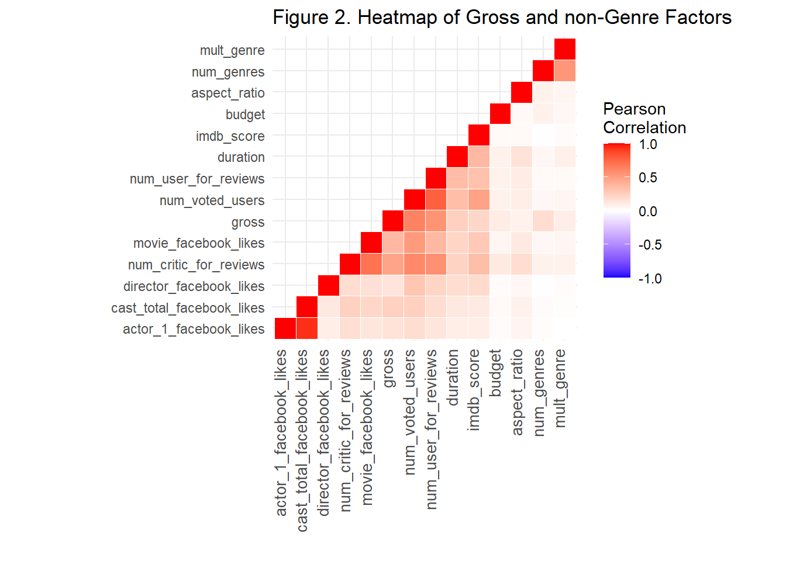
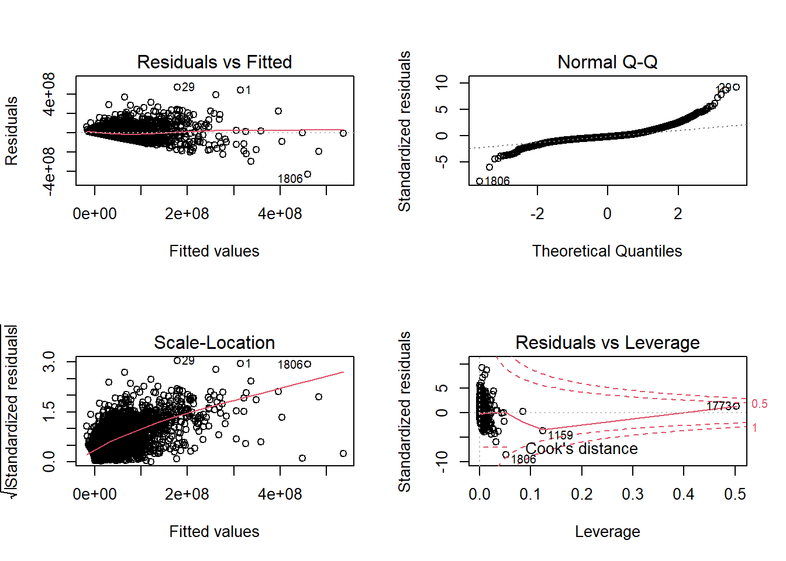
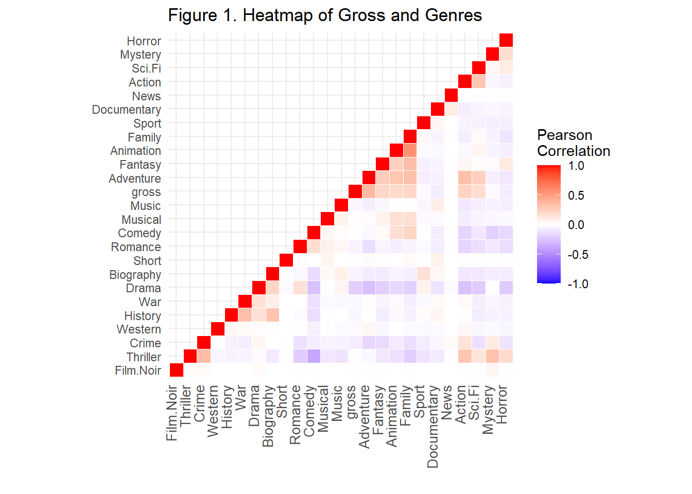
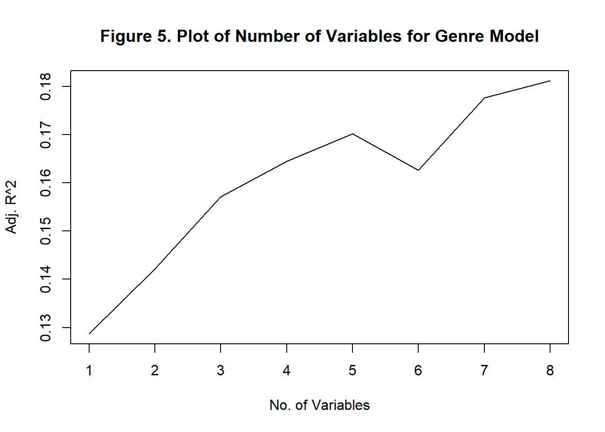
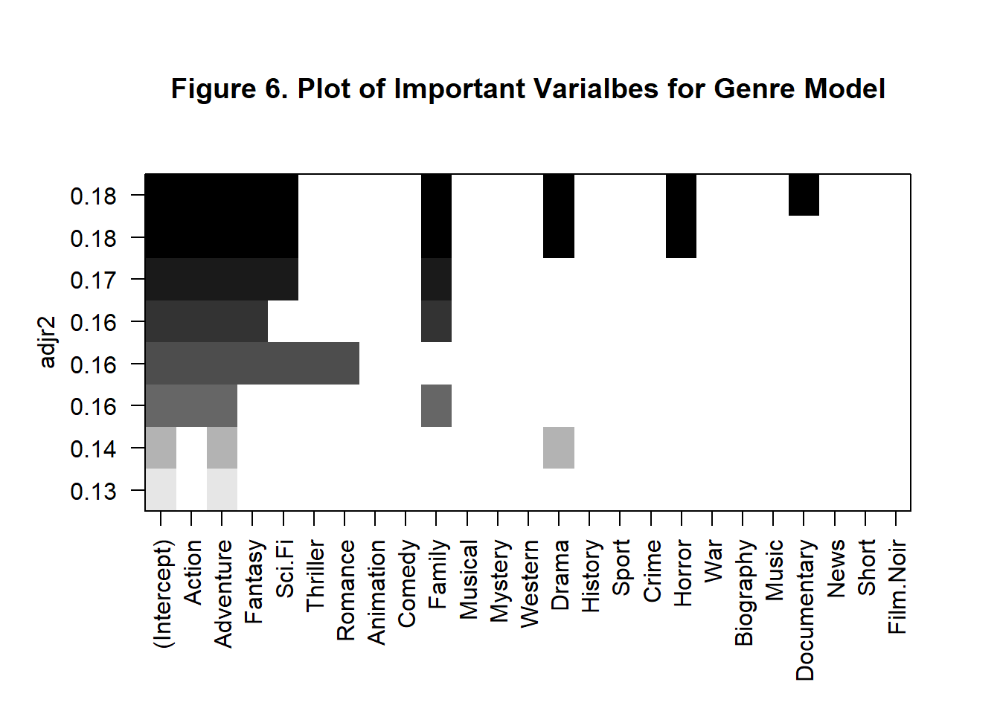

Final_report
Motivation:
Given the scenario of social distancing and temporary closure of movie theaters across the United States, the pandemic did hit the movie industry severly not only for a domestic market but also in a global scale. According to Comoscore, it has been a dramatic 76% drop in domestic box office in 2020 compared with the same point in 2019. Substantial resturcting in the movie industry urge the producers and directors to be effective and efficient as much as possible. Box-office prediction has never been such a crucial problem in the film industry, such that profitability is directly associated with strategy made by investors and producers.
Our main goal is to:
- use skinny to explore the association between the box-office gross and other variables including genres, budget, and IMDb score
- create word cloud, radar map on contributing factors
- generate linear regression model to predict box-office revenue
Intial Questions:
- What is the general trend of gross across time? Will this pattern vary for different genres?
- What is the association between Gross and other variables including IMDB_score, facebook_likes?
- Is director a significant predictor of Gross?
- the crude relationship between number of reviews and Gross
Data
Data Sources
- Primary data source: Kaggle
- release ymd(year, month, date): [IMDb] (https://https://www.imdb.com/)
Variables of interest
Outcomes
gross: total gross for the movies
Candidate Predictors
| Variable name | Data type | Variable explanation |
|---|---|---|
director_name |
chr | Name of the Director of the movie |
director_facebook_likes |
dbl | Number of likes of the director on his/her Facebook Page |
actor_1_name |
chr | Primary actor starring in the movie |
actor_1_facebook_likes |
dbl | Number of likes of the Actor_1 on his/her Facebook Page |
cast_total_facebook_likes |
dbl | Number of likes of the total casts on his/her Facebook Page |
movie_facebook_likes |
dbl | Number of likes of the movie on its Facebook Page |
duration |
dbl | Length for the movie |
genres |
chr | Total genres for the movie |
movie_title |
chr | The title for the movie |
num_critic_for_reviews |
dbl | Number of the critic reviews for the movie |
num_voted_users |
dbl | Number of users who review for the movie |
num_user_for_reviews |
dbl | Number of users reviews for the movie |
language |
chr | Main language for the movie |
country |
chr | Country for the movie |
budget |
dbl | Total budget for the movie |
title_year |
dbl | Release year for the movie |
imdb_score |
dbl | Overall score for the movie on IMDB |
aspect_ratio |
dbl | Aspect ratio for the movie |
Data Cleaning
- For model
- Keep only interested variables
- Manipulate
genresandplot_keywordscolumn: - Input example: “avatar|future|marine|native|paraplegic”
- Purpose: separate into multiple columns with 0 and 1
- Find all the genres:
unique,unlist, andstr_split - Create a blank dataframe with all 0s
- Columns number is equal to raw dataset
- Row number is equal to genres types
- Use for loop: test for all the movies, if it has the certain genres, change the corresponding number from 0 to 1
- Find all the genres:
imdb_raw = read_csv("./data/movie_metadata.csv")
#data cleaning
imdb = imdb_raw %>%
as.data.frame() %>%
drop_na(movie_title) %>%
#keep only interested variables
select(
-color, -actor_2_name, -actor_2_facebook_likes, -actor_3_name, -actor_3_facebook_likes, -facenumber_in_poster, -movie_imdb_link, -content_rating, -plot_keywords
) %>%
drop_na(gross)
rownames(imdb) = c(1:dim(imdb)[1])
#separate genres into multiple columns
a = imdb$genres
genres_list = unique(unlist(str_split(a, "[|]")))
niubility = as.data.frame(matrix(0, nrow=dim(imdb)[1], ncol=length(genres_list)))
colnames(niubility) = genres_list
for (i in 1:dim(imdb)[1]){
b = unlist(str_split(imdb$genres[i], "[|]"))
for (word in b){
niubility[i, word] = 1
}
}
rownames(niubility) = c(1:dim(imdb)[1])
imdb_after_genre = data.frame(imdb, niubility)
imdb_model =
imdb_after_genre %>%
select(num_critic_for_reviews:gross, num_voted_users:num_user_for_reviews, budget, imdb_score: Film.Noir)
imdb_model_clean =
imdb_model %>%
select(num_critic_for_reviews:num_user_for_reviews, imdb_score, Action:Fantasy, Romance:Family, Drama, Sport:Horror, Music)- For shiny:
separate+pivot_longer:- Purpose: all the original words as the filter for nearly all the plots
- Use
separatefunction to split the column into multiply sub-columns (g1-g8). 8 is the maximum genre type of a single film. By then, unused columns of a single film will be recorded as NA - Use
pivot_longerto convert these sub-columns to the pattern as id – value. Then, we can clean the value column (drop NA) and ignore the id value. plot_keywordscolumns is treated same as this
- Use
- Purpose: all the original words as the filter for nearly all the plots
- Initial cleaning for shiny
- manipulate the genre and plot_keywords columns
- separate and pivot_large those two columns
- manipulate the genre and plot_keywords columns
### Import data
imdb_raw = read_csv("./Dataset/movie_metadata.csv")
### Get the year month date:
get_ymd <- function(url_raw)
{
url = str_replace(url_raw,"\\?ref","releaseinfo?ref")
swm_html = read_html(url)
ymd =
swm_html %>%
html_nodes(css = ".release-date-item:nth-child(1) .release-date-item__date") %>%
html_text()
return(ymd)
}
#imdb =
# imdb_raw %>%
# mutate(ymd = map(movie_imdb_link, get_ymd)) %>%
# unnest(ymd)
### Cleaning
imdb_clean =
imdb_raw %>%
drop_na(movie_title, gross) %>%
mutate(movie_title = str_replace(movie_title,"\\?$","")) %>%
separate(genres,
sep = "\\|",
into = c("g1","g2","g3","g4","g5","g6","g7","g8")) %>%
pivot_longer(g1:g8,
names_to = "dummy",
values_to = "genres") %>%
select(-dummy) %>%
drop_na(genres) %>%
separate(plot_keywords,
sep = "\\|",
into = c("g1","g2","g3","g4","g5","g6","g7","g8")) %>%
pivot_longer(g1:g8,
names_to = "dummy",
values_to = "plot_keyword") %>%
select(-dummy) %>%
drop_na(plot_keyword)
write.csv(imdb_clean,"./Dataset/imdb_explore_clean.csv", fileEncoding = "utf-8")- Reading ymd from IMDb:
- Use css selector to identify the target element
- For loop and get ymd information over repeated writing
# ymd
### Get the year month date:
get_ymd <- function(url_raw)
{
url = str_replace(url_raw,"\\?ref","releaseinfo?ref")
swm_html = read_html(url)
ymd =
swm_html %>%
html_nodes(css = ".release-date-item:nth-child(1) .release-date-item__date") %>%
html_text()
return(ymd)
}
for (i in 1:nrow(dataset_r)) {
test_df = read_csv("./data/imdb_release.csv")
if (is.na(test_df[[3]][i])) {
test_df[[3]][i] <- get_ymd(test_df[[2]][i])
}
test_df %>%
write_csv(.,"./data/imdb_release.csv")
}
imdb_ymd = read_csv("./data/imdb_release.csv") %>%
separate(release_date, into = c("day","month","year"), sep = " ", fill = "left") %>%
write_csv(.,"./data/imdb_ymd.csv")- Animation plot
- Use
left_jointo intergate ymd with our dataset
- Use
# Animation
imdb_clean = read_csv("./dataset/movie_metadata.csv") %>%
drop_na(movie_title, gross) %>%
mutate(movie_title = str_replace(movie_title,"\\?$","")) %>%
separate(genres,
sep = "\\|",
into = c("g1","g2","g3","g4","g5","g6","g7","g8")) %>%
pivot_longer(g1:g8,
names_to = "dummy",
values_to = "genres") %>%
select(-dummy) %>%
drop_na(genres)
imdb_ymd = read_csv("./dataset/imdb_ymd.csv") %>%
select(-movie_imdb_link)
month_df =
tibble(
month_value = 1:12,
month = month.name
)
imdb_m = left_join(imdb_ymd, month_df, by = "month") %>%
select(-month) %>%
mutate(month = month_value, .keep = "unused")
imdb_cleanymd = left_join(imdb_clean,imdb_m,by = "movie_title")
imdb_cleanymd %>%
select(gross, genres, month, year, imdb_score) %>%
write_csv("./data/shiny_animation.csv")- Circulation plot
- Use
unqiue,distinctandsortto order the movie_list
- Use
#Circulation plot
imdb_cir <- read_csv("./Dataset/imdb_explore_clean.csv")
imdb_cir <-
imdb_cir %>%
select(movie_title, director_name, title_year, gross, genres) %>%
distinct(movie_title, genres, .keep_all = T)
valuelist <- unique(pull(imdb_cir, gross))
valuelist <- sort(valuelist, decreasing = T)[1:50]
imdb_cir_final <-
imdb_cir %>%
filter(gross %in% valuelist) %>%
arrange(gross)
write_csv(imdb_cir_final, "./Dataset/shiny_circulation.csv")- Gross vs. everything plot
- Select the interested numeric variables, title and genre
- Distinct by title and genre
# Plotly
df1 = read_csv("./Dataset/imdb_explore_clean.csv") %>%
select(movie_title,genres, gross, num_critic_for_reviews,duration,director_facebook_likes,
actor_3_facebook_likes,actor_2_facebook_likes,actor_1_facebook_likes,
num_voted_users, facenumber_in_poster, num_user_for_reviews,
budget, imdb_score, aspect_ratio, movie_facebook_likes, title_year) %>%
mutate(title_year = as.numeric(title_year)) %>%
distinct(movie_title, genres, .keep_all = T)
write_csv(df1, "./Dataset/shiny_plotly.csv")- Radar plot
- write function to repeat the summarize process by genres
## Radar plot
### Step 1. Extract relevant data:
imdb_vis <- read_csv("./Dataset/imdb_explore_clean.csv")
imdb_radar <-
imdb_vis %>%
select(movie_title,genres, gross, num_critic_for_reviews,duration,director_facebook_likes,
actor_3_facebook_likes,actor_2_facebook_likes,actor_1_facebook_likes,
num_voted_users, facenumber_in_poster, num_user_for_reviews,
budget, imdb_score, aspect_ratio, movie_facebook_likes) %>%
distinct(movie_title,genres,.keep_all = TRUE)
imdb_radar_raw = imdb_radar
name_list_radar = names(imdb_radar)
### Step 2. Functions for summarize:
group_and_standardize <- function(Tibble)
{
name_list_radar = names(Tibble)
Tibble_begin <-
Tibble %>%
select(name_list_radar[2]) %>%
group_by(genres) %>%
summarise(n=n())
for (i in 3:length(name_list_radar))
{
Tibble_process <-
Tibble %>%
select(name_list_radar[2],name_list_radar[i]) %>%
rename(dummyname = name_list_radar[i]) %>%
group_by(genres) %>%
summarise(dummy = mean(dummyname, na.rm = T)) %>%
mutate(dummy = (dummy - min(dummy, na.rm = T))/(max(dummy, na.rm = T)- min(dummy, na.rm = T))) %>%
select(dummy)
Tibble_begin = cbind(Tibble_begin,Tibble_process)
}
return(Tibble_begin)
}
group_without_standardize <- function(Tibble)
{
name_list_radar = names(Tibble)
Tibble_begin <-
Tibble %>%
select(name_list_radar[2]) %>%
group_by(genres) %>%
summarise(n=n())
for (i in 3:length(name_list_radar))
{
Tibble_process <-
Tibble %>%
select(name_list_radar[2],name_list_radar[i]) %>%
rename(dummyname = name_list_radar[i]) %>%
group_by(genres) %>%
summarise(dummy = mean(dummyname, na.rm = T)) %>%
select(dummy)
Tibble_begin = cbind(Tibble_begin,Tibble_process)
}
return(Tibble_begin)
}
## The final data
imdb_radar <- group_and_standardize(imdb_radar)
names(imdb_radar) = c("genres","N", name_list_radar[3:length(name_list_radar)])
imdb_radar <-
imdb_radar %>%
as_tibble() %>%
#select(N) %>%
mutate(N = (N - min(N))/(max(N)-min(N))) %>%
pivot_longer(N:movie_facebook_likes,
names_to = "variable",
values_to = "value")
write_csv(imdb_radar,"./Dataset/shiny_radar.csv")
imdb_radar_raw <- group_without_standardize(imdb_radar_raw)
names(imdb_radar_raw) = c("genres","N", name_list_radar[3:length(name_list_radar)])
imdb_radar_raw <-
imdb_radar_raw %>%
as_tibble()
write_csv(imdb_radar_raw,"./Dataset/shiny_radar_df.csv")- Wordcloud plot
- Select genre and plot_keywords from cleaned datasets
#Wordcloud
imdb_raw =
read_csv("imdb_explore_clean.csv") %>%
select(genres, plot_keyword) %>%
write.csv("./Dataset/shiny_keyword.csv")- Valuebox plot
- Use unqiue and genre filter to order the movie list
# Data for valuebox:
df <-
read_csv("./Dataset/imdb_explore_clean.csv") %>%
select(movie_title, director_name, gross, title_year, genres) %>%
distinct(movie_title, genres, .keep_all = T)
genrelist <- unique(pull(df,genres))
df_final <-
tibble(movie_title = "",
director_name = "",
gross = 0,
title_year = 0,
genres = "")
for (g in genrelist){
df_sub <-
df %>%
filter(genres == g) %>%
slice(1:3)
df_final <- rbind(df_final, df_sub)
}
df_final %>%
slice(-1) %>%
write_csv("./Dataset/shiny_valuedf.csv")Formal Analysis
Overview
We aimed to investigating factors that associated with the gross and how these factors influenced the gross. We hoped to construct a robust model that may potentially guide film industry investors to make wise decisions after the pandemic.
After correlation matrices, genres in general didn’t have strong associations with the gross but disturbed the effect of other predictors (not shown). Thus, we decided to build single linear regression models with stratification of genres and presented in form of interactive plot.
Since the exploratory analyses and SLR models didn’t provide much information, we decided to build the multiple linear regression model, from the full model, without a predetermined hypothesis. Meanwhile, in a situation of investing, genres are usually predetermined. Thus, we decided to build two models: model 1 contained predictors other than genres and model 2 contained genres only.
We used a special stepwise regression method to find the best model. A general Stepwise regression is a “step by step” method to select predictors which have higher AIC scores. However, rather than comparing variables’ AIC, our method based on the comparison of each model’s accuracy and it will provide a better model than traditional AIC stepwise regression. Finally, we presented two final models in the end of the section and discussed some interesting discoveries based on our models.
Heatmap Plots of Correlation
Heatmap for Genres

## # A tibble: 1 x 12
## ` ` Adventure Fantasy Animation Family Sport Documentary News Action Sci.Fi
## <fct> <dbl> <dbl> <dbl> <dbl> <dbl> <dbl> <dbl> <dbl> <dbl>
## 1 gross 0.36 0.21 0.19 0.21 -0.02 -0.08 -0.01 0.23 0.18
## # ... with 2 more variables: Mystery <dbl>, Horror <dbl>Figure 1 presented the correlation matrix between various genres and gross. From the heatmap, we can intuitively observe associations between genres and gross. Overall, we didn’t observe any strong connections between genres and gross. Among all genres, adventure, fantasy, animation, family, action and science fiction have stronger associations with gross and they may contribute to the model later.
Heatmap for non-Genre Factors

## # A tibble: 1 x 9
## ` ` num_voted_users num_user_for_re~ duration imdb_score budget aspect_ratio
## <fct> <dbl> <dbl> <dbl> <dbl> <dbl> <dbl>
## 1 gross 0.63 0.55 0.25 0.21 0.1 0.07
## # ... with 2 more variables: num_genres <dbl>, mult_genre <dbl>Figure 2 presented the correlation matrix between other factors and gross. We observed a better and stronger associations. Among all predictors, number of voted users, number of users for reviews, duration, IMDB scores, budget and number of genres have stronger associations with gross and they might contribute to the model later.
Stratified Single Linear Regression Model
From the heatmap, we observed a generally weak association between genres and gross. Therefore, we decided to perform single linear regression between gross and each predictor to discover possible significant predictors. Detailed plots and model summaries were located HERE. Interestingly, the majority of single linear regression models was significant. Thus, unfortunately, it didn’t provide much information regarding the building of our final models and we decided build the model from the full model.
Model Building
We applied regsubsets from leap library to conduct the regression. Basically, this function constructs the null model first (contains only intercept) and combines various of variables to form an exhaustive subset of models. Within the subset, the function will compare the adjusted R2 and find the best combination of predictors. It is a better method than stepwise selection but needs a longer calculation time. Also, since cross validation has been done within the function, we don’t need to perform the cross validation. Because we don’t have many features, we decided to utilize this method to select the best model.
Model without Genres
 
Figure 3 showed how many variables should the best model included. In our case, including 8 variables will make our model reach the highest accuracy (highest adjusted R2).
From Figure 4, we can conclude our model should include following variables: number of critics for reviews, Facebook likes of the director, Facebook likes of the primary actor/actress, number of voted users, total Facebook likes of the cast, number of users for reviews, IMDB score and the number of genres.
non-Genre Model
| term | estimate | p.value |
|---|---|---|
| (Intercept) | 23602061.777 | 0 |
| num_critic_for_reviews | 59149.428 | 0 |
| director_facebook_likes | -1146.178 | 0 |
| actor_1_facebook_likes | -1714.282 | 0 |
| num_voted_users | 229.287 | 0 |
| cast_total_facebook_likes | 1617.668 | 0 |
| num_user_for_reviews | 18131.000 | 0 |
| imdb_score | -6249571.013 | 0 |
| num_genres | 8253052.829 | 0 |
Model of Genres

Similarly, 8 variables should be included in our model according to Figure 5. From the Figure 6, we can conclude Action, Adventure, Fantasy, Sci-Fiction, Family, Drama, Horror and Documentary are important factors that influence the gross. However, since the accuracy (adjusted R2) is small, genre in general may not be an important factor to consider.
Genre Model
| term | estimate | p.value |
|---|---|---|
| (Intercept) | 40074841 | 0 |
| Action | 15812139 | 0 |
| Adventure | 37374617 | 0 |
| Fantasy | 20218164 | 0 |
| Sci.Fi | 16435725 | 0 |
| Family | 17484363 | 0 |
| Drama | -13173462 | 0 |
| Horror | -18033828 | 0 |
| Documentary | -29120044 | 0 |
Diagnosis

Figure 7-10. Plots to Check the Assumptions after Transformation
Above provides assumption checking of the non-genre model. Since the non-Genre Model has a much higher accuracy, we check the assumption of it. Unfortunately, plots are not satisfactory.
A cluster of data locates mainly on the left and is not randomly distributed for the Residuals vs Fitted plot. However, other clear pattern is not observed, meaning that linear regression is still appropriate.
Normal QQ plot provides insight of its normality and the majority of our model lied on the line, which is acceptable.
For scale location plot, a cluster of data aggregates together showed the equal variance assumption was violated.
Lastly, we can observe some outliers that are influential from the Residuals vs Leverage plot.
Since nearly all the assumptions were violated in some extent, we decided to perform a box-cox transformation.
Box-Cox Transformation
Box-Cox transformation is another common method to normalize the data. Detailed information is provided here. We performed Box-Cox transformation to our non-Genre model and check the assumptions again.

Figure 11. Fitted Lambda for Box-Cox Transformation.
Above provides the fitted lambda for the transformation and we transformed our model based on this lambda, which was 0.303.
Assumption Checking after Transformation
Figure 12-15. Plots to Check the Assumptions after Transformation
Above presents the check of assumption after transformation. In general, Box-Cox transformation provided a quite satisfactory transformation to our model.
A cluster of data still exists on the left and is more randomly distributed compared the plot before transformation.However, a long “tail” on the right suggests a strong influence of outliers.
Transformed model lies on the line perfectly.
For scale location plot, a cluster of data aggregates together but the trend line is more horizontal than the previous scale location plot, showing that the homoskedasticity (equal spread of the data) is checked for the majority of the data.
Lastly, we can still observe some outliers that are influential from the Residuals vs Leverage plot.
Limitation
Even though we performed Box-Cox transformation to make our non-genre model better satisfy the assumptions for regression, the model still didn’t satisfy the assumptions well. It may implies a complicated model should be utilized, like machine learning algorithms. In addition to the method selection, the data should contain more features, like inflation rate, to provide more insights in model building. ## Discussion
Findings
Regarding the Genre Model:
Overall, genres really really don’t matter, as long as the movie has a popular genre. There is a great overlap between the popular genres and the important genres in our genre model, but the accuracy is weak.
From the genre model, action, adventure and family are the top three genres that can ignite the gross. We propose that the main audiences of movie theater are young people who are interested in visual effects or special effects. Surprisingly, family movie is another guarantee of the gross since family movies have a broader audiences. After all, watching movie together has became a family event for a long time.
Horror, documentary and drama have the negative effect on gross. We suppose the reason that genres with a limited scope of audiences will negatively affect on gross. These three genres usually keep audiences from entering the theater. (PS: I personally have never watched these three genres of movies in a movie theater.)
The Genre model may not be referential that much since nowadays, a film usually contains elements from multiple genres and it will be getting harder to define one film’s genre in the future. Still, the model provides some insights. After all, horror movie indeed keep some audiences (like me) away from the theater.
Regarding the non-Genre Model:
Overall, non-genre model can provide much more insights than the genre only model since it is more accurate. However, the coefficients are really surprising.
The most influential factor that positively influence the gross is the number of genres. In other words, the more genres (or more elements) are included in the movie, the more successful of the movie will be. It provides an interesting insight that the majority of audiences is much more interested in the film itself, rather than the stars or the production. Telling a good story is vitally important.
Other than the number of genres, factors that positively influence, with a great magnitude, the gross are number of critic for reviews and number of users for reviews. These two factors, to a large extend, represent the popularity of a movie and emphasizing the power of marketing. Marketing, in any industries, is nowadays an essential factor on determining the sales, especially with the fast growing of social media. However, since our data was collected from IMDB and either the number of critics and the number of users was cumulative, marketing of a successful movie should be a long term efforts.
Lastly, and ironically, IMDB scores negatively influence the gross dramatically. Why is? We believe that there exists an inconsistency between score and the gross, since none of the score related factors provides a strong and positive effect on gross. Such inconsistency may because only limited people actually score the movie.